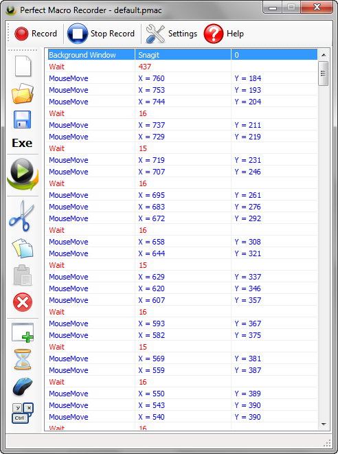

Perfect Macro Recorder is the easiest windows automation and macro recorder tool that can saves your time and increase productivity by automating repetitive tasks.
Perfect Macro Recorder is a macro recording software. It can records keystrokes and mouse clicks, so you can replay these actions later. It provides you also with the ability to edit your recorded macros and exporting them as a standalone EXE files.
When you playback a recorded task, you eliminate the repetition action of doing it more and more, so you can relief yourself for another creative task in which you really love, and later you will discover how to bundle many tasks into only one task called "playback the macro". With Perfect Macro Recorder you will save time, money, perform complex tasks and increase productivity.

What is the main benefits of Perfect Macro Recorder?
- Automate the use of an application that you are using constantly.
- Save your time.
- Perform complex operations.
- Automate repetitive tasks.
- Automate testing of your apps
- Increasing your productivity.
- Reduce the work stress.
- Application launcher.
Main features of Perfect Macro Recorder?
- Records keyboard and mouse actions for later playback.
- Macro script editor so to edit and modify macro after recording.
- Keyboard Hotkeys for Start/Pause/Resume/Stop both recording and Playback.
- Repeat playback as much as you want.
- Convert macro to an EXE-file that can run stand alone.